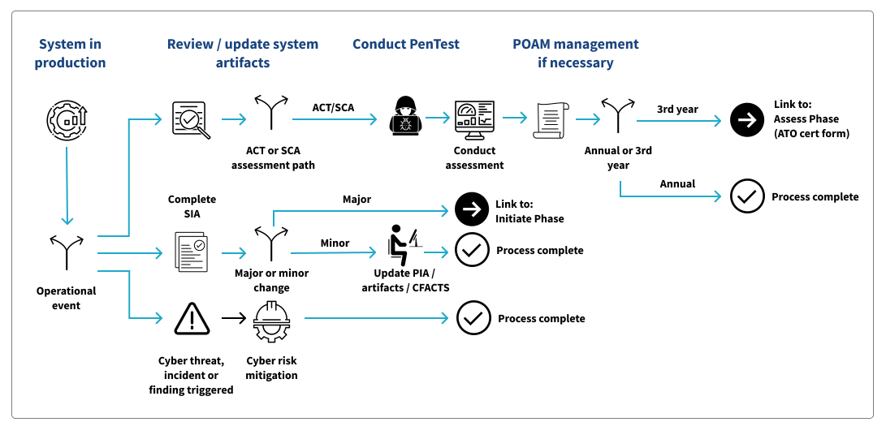

Operate
Overview
The Operate Phase is what we think of as normal business operations. The system runs in a production environment, and the team does normal upgrades, enhancements and maintenance. To remain compliant with the ATO, the Business Owner maintains the TLC System Profile with every Production release. Annual security requirements such as controls assessments, PenTests and annual recertification are completed to ensure the security posture of the system is sound.
The following maintenance issues must be supported throughout this phase:
- Upgrades
- System software patches
- Hardware upgrades
- Modifications to interfaces with other systems
During the Operate Phase the project team works with the ISSO to maintain current documentation and to support periodic reviews and audits. The inability to produce current documentation may impact a system’s ATO.

Annual Assessments
Each system undergoes annual assessments and maintenance during the Operate Phase to ensure compliance with its ATO. These typically include:
- Updating core documentation
- Updating the Contingency Plan
- Conducting a Contingency Plan Tabletop Exercise
- Addressing and closing open POA&Ms, if applicable
- Assessing controls
Reauthorization
Every three years, a system's ATO is assessed for reauthorization. Much like the annual assessments, this includes a review of a subset of system controls and POA&Ms. Once the review is completed, the ISSO and BO submit an ATO request form that assures all testing has been complete. ISPG then reviews the request form and renews the system authorization.
System Change
A significant change to a system can require an update to its ATO. A significant change is defined as a change that is likely to substantively affect the security or privacy posture of a system (see NIST SP 800-37 for more information). This includes but is not limited to:
- A new or upgraded hardware platform
- A new or upgraded operating system, middleware component, or application
- Changes to system ports, protocols, or services
- Changes to how information, including PII, is processes
- Changes to cryptographic modules or services
- Changes in information types processed, stored, or transmitted by the system
- Changes to security and privacy controls
If a system is undergoing a significant update, the Business Owner should reach out to the ISSO to discuss and, if needed, initiate an authorization change.
Based on the information from the BO, the ISSO completes a Security Impact Analysis (SIA). If the update does not have security impact, it is determined to be minor. In this case the only action is to update any relevant documentation in CFACTS.
If based on the SIA the update is determined to be a significant change that impacts security, the system could require a new ATO. In this case, the ISSO works with the BO and team to complete a new intake form.
Cyber Risk Event
As more activities move online and to the cloud, the chance of cyber attacks and other risks go up. If a risk event is identified, the ISSO and team must work quickly and collaboratively to isolate and resolve it. The ISSO must open an incident response ticket with the IT service desk to start an investigation. They will execute the CMS incident management lifecycle process to address any actual or false positive events.
Once the risk is under control, system security should be reviewed and updated to mitigate the risk recurring in the future. The updates must be tested to ensure they both remediated the risk and that they haven't negatively impacted any other systems.
Onward to Retirement
The system continues to operate, undergoing assessment, reassessment and change management through the end of its contract and/or useful life. Once it reaches either of these milestones, the system transitions to the Retirement Phase.